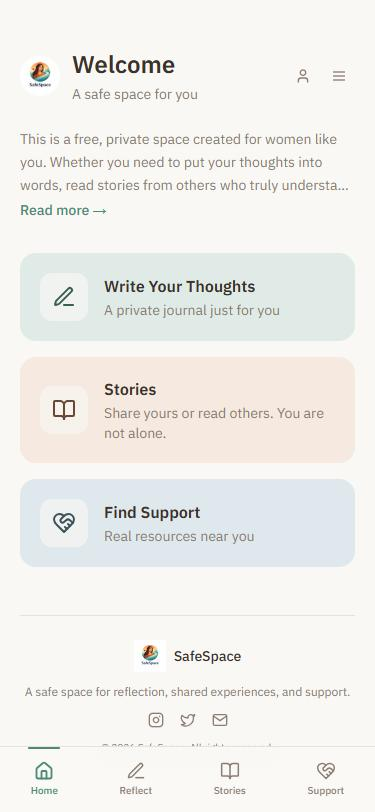
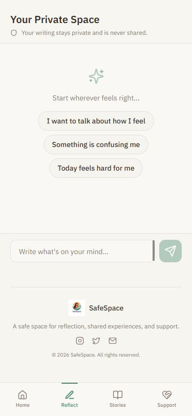
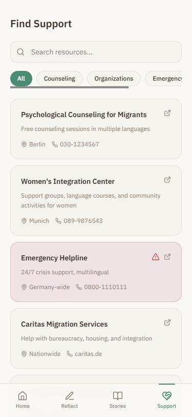

SafeSpace
HCI Master's thesis · Analytical design fiction · 2026
A quiet AI companion for the first months in a new country: it helps you sort your thoughts, then points you towards people.
Built from interviews with eight Farsi-speaking women from Iran in their early months in Germany, many of whom already turned to ChatGPT for letters, plans and lonely evenings.
Research question
How do recently arrived immigrant women interpret and negotiate AI-mediated emotional support, and what tensions emerge?
The interaction
- 01 · Reflect. A private AI-assisted journal with gentle prompts; you decide how much to share.
- 02 · Recognise. Anonymised stories from other women, to feel less alone without having to take part.
- 03 · Reach out. A clear directory of counselling, legal and integration services.
Clickable prototype (Lovable). Multilingual, with right-to-left Farsi. Data stays on the device. Not evaluated with users, and not therapy.
Try the live prototype ↗




Situated context
What if an AI companion knew where its care ends?
The early months of migration
Official letters in a new language, family far away who must not worry, few people nearby. In that gap an AI chat is always open. SafeSpace treats it as one bounded layer of support, next to people, not instead of them.
Questions
- Expression. Can writing to an AI be a rehearsal for talking to people?
- Memory. When does being remembered start to feel like being tracked?
- Warmth. When does comfort from a machine start to feel hollow?
Reflection and next step
An exploratory artefact from a small group in Siegen, not a validated intervention. Next: designing the bridge from private reflection to community, without losing control or trust.